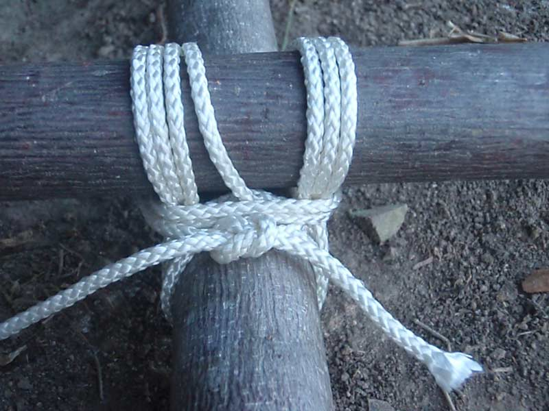

Square Lashing
The square lashing has been used to build everything from camp chairs to towers and bridges – but you can also use it to secure two poles together.
How to tie a square lashing:
Tie a clove hitch to one of the poles, near the place where the two poles cross. Then wrap your line around the junction of the two poles, going under the lower pole and over the top pole. Spiral outward with these wraps five or six times. Next, wrap between the poles, biting onto the previous wrappings to tighten them. Finally, use a square snot to tie the free end of the rope to the free end from the clove hitch that started this whole lashing. Easy, right?
